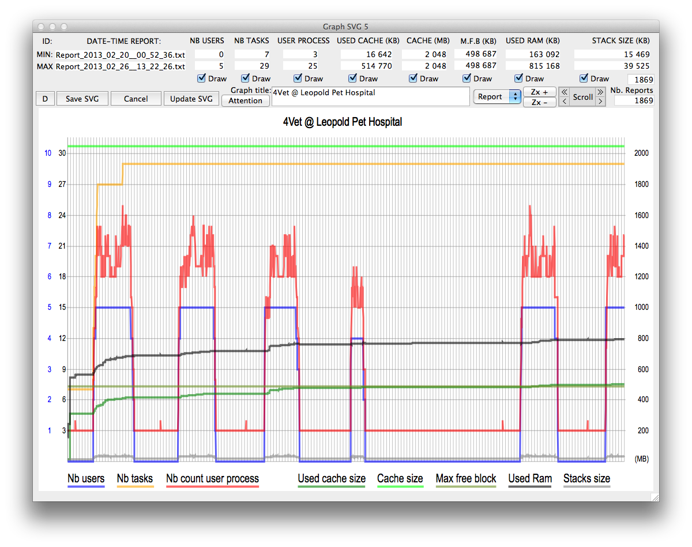

4D Info Component
The component 4D_Info_Report v4 (“the information component”), written by Thomas Schlumberger of 4D France, produces readable text reports describing the computer (hardware and operating system), the 4D application version, and the host database’s settings and table summary.
It needs no plug-ins or other components, creates no tables or records in the host database, and never reads record content — only structure counts (tables, fields, indexes and record counts). Reports can be produced in English or French.
Current release — v4.71 (May 2024)
- 4D 20 (up to 20 R4 and later R releases): 4D_Info_Report_v4_71_IS_20.zip
- 4D 19 R6 and later 19 R releases: 4D_Info_Report_v4_71_IS_19R6.zip
- 4D 19 (up to 19 R5): 4D_Info_Report_v4_71_IS_19.zip
- Host template database (4D 19 and later): 4D_Info_Report_Host_T_v9_19.zip
- Reference manual, revision 39 (28 February 2024, describes v4.70): 4D_Info_Report_v4_70_Ref_v39.pdf
Installing
Put 4D_Info_Report_v4.4dbase in the host database’s Components folder.
From the host template, drag these methods into your host database, keep their names, and set each to “Shared by components and host database”:
aa4D_H__Startup(call from On Startup)aa4D_H_On_Server_Startup(call from On Server Startup)aa4D_Host_GetDBParamaa4D_M_Host_Manage_Info_Reportaa4D_M_Host_Attention_Reportedaa4D_M_Host_Allow_Report_accessaa4D_M_Host_SP_Scheduler(required if you useaa4D_H_On_Server_Startup)
The methods do no harm if the component is later removed.
To call a shared method only when the component is present (so the database still compiles without it):
ARRAY TEXT($at_Components;0)
COMPONENT LIST($at_Components)
If (Find in array($at_Components;"4D_Info_Report@")>0)
EXECUTE METHOD("aa4D_NP_Schedule_Reports_Server";*;30;-2) // start the server stored procedure
// EXECUTE METHOD("aa4D_NP_Schedule_Reports_Server";*;0) // stop it
End if
The reference manual covers every shared method, the preferences and deployment in full.
Archived versions
These versions are no longer updated.
| 4D version | Download |
|---|---|
| 4D 18 | 4D_Info_Report_v4_9rZK_v18.zip (v4.9rZK) |
| 4D 17 | 4D_Info_Report_v4_9rZK_v17.zip 4D_Info_Report_v4_9rZK_64-bit_v17.zip (64-bit) |
| 4D 16 | 4D_Info_Report_v4_9rZC_rev1_v16.zip |
| 4D 15 | 4D_Info_Report_v4_9rZ8_rev1_v15.zip |
| 4D 14 | 4D_Info_Report_v4_9rZ2_v14_rev1.zip |
| 4D 13 | 4D_Info_Report_v4_9rZ2_v13_rev1.zip |
| 4D 12 | 4D_Info_Report_v4_9rZ_v12.zip |
| Host template, 4D 15–17 | 4D_Info_Report_Host_T_v7_v17.zip |
| Host template, 4D 12 and earlier | 4D_Info_Report_Host_T_v6_v12.zip |
| Reference for v4.9, revision 29 | 4D_Info_Report_v4_9_Ref_v29.pdf |
Example report graph
